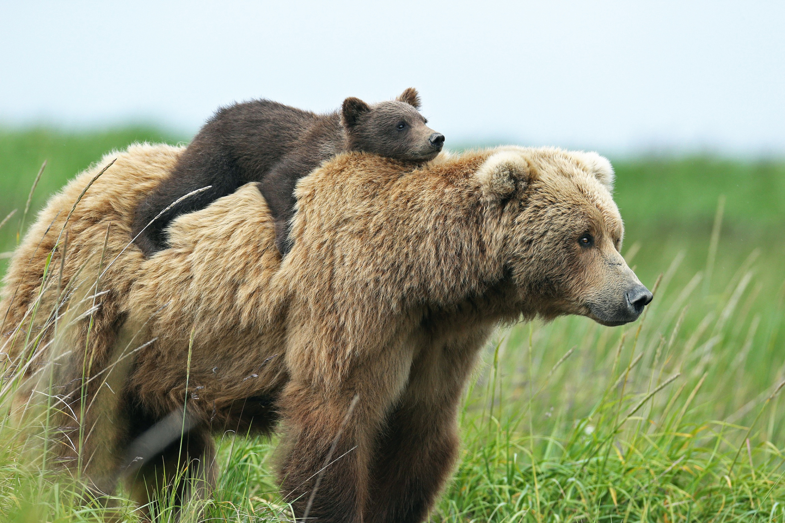
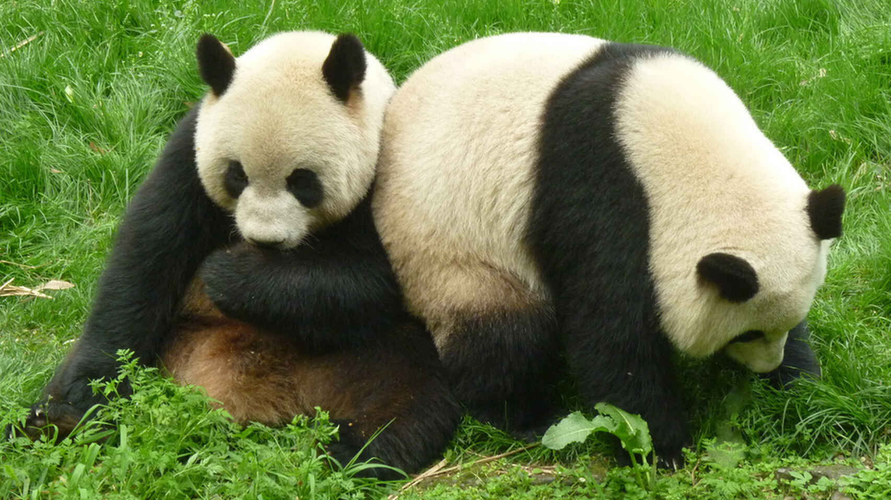
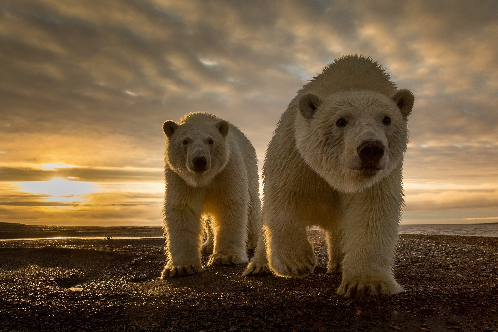
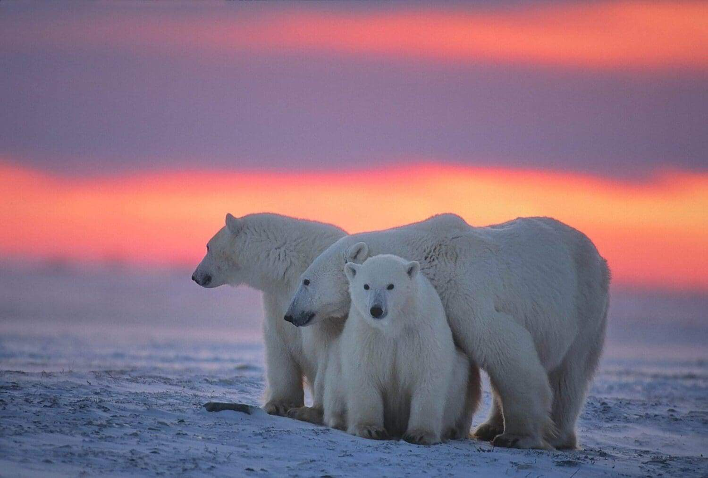

¿SABÍAS QUE..?
-

LOS OSOS PARDO
poseen una fuerza de mordida de más de 1200 PSI, que es suficiente para aplastar una bola de bolos o una sartén de hierro.
-

LOS OSOS PANDA
no invernan debido a que su dieta no les permite acumular grasa para sobrevivir el invierno.
-

LOS OSOS POLARES
para poder sobrevivir al frio extremo tienen una capa de grasa en la piel que mide hasta 6.5 centímetros de grueso, la cual funciona como aislante térmico
-

LOS OSOS POLARES
gracias a su alimentación altamente energética y su capacidad para acumular reservas de grasa, pueden llegar a pesar hasta una tonelada. Esto los convierte en el depredador terrestre más grande de todos.